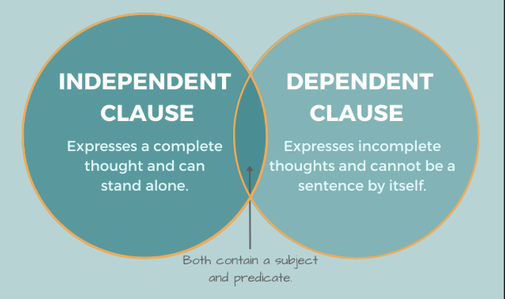

Connecting two Indpendent Clauses with Comma and Semicolons
To use a comma or not before “but” always trips me up. For future reference, I am documenting the general rules for connecting two indepå`endent clauses using coordinating conjunctions (e.g., but and is) and Independent Marker Words (e.g., however and also).
Let us start with the general definition of what is clause and the two types of clauses.
A clause is a group of words containing a subject and a verb or verb phrase.

An independent clause is a clause that can stand alone as a sentence (i.e., it expresses a complete thought). The following are examples of independent clauses:
- The professor always comes to class fully prepared. (contain a subject and a verb)
- The team won the game. (the subject is a team and won is a verb)
A dependent clause (or subordinate clause) is one that cannot stand alone as a complete sentence (i.e., it does not express a complete thought). Dependent clauses must be combined with one or more independent clauses to form a sentence. The following are examples of dependent clauses:
Musa won’t be able to attend a class today because he injured his foot. (Because he injured his foot is a dependent clause. It contains the subject he and the verb injured. The clause does not express a complete thought and cannot stand on its own as a sentence)
I forgot where I put the bicycle keys. (Where I put the bicycle keys is a dependent clause. It contains the subject I and the verb put. The clause does not express a complete thought and cannot stand on its own as a sentence.)
Connecting independent clauses
There are two ways to connect independent clauses: using coordinating conjunctions and using conjunctive adverbs (connecting words).
Using coordinating conjunctions
There are seven types of coordinating conjunctions: and, but, for, or, nor, so, and yet. When two independent clauses are connected by a coordinating conjunction, the comma is necessary before the coordinating conjunction.
I went to school today, but I forgot my bag at the airport.
She invited me to the party, but they all gave her excuses for not coming.
Today is a rainy day, but I will go to the park to see him.
The beach is a lot of fun, yet the mountains are better.
Using conjunctive adverb or a transitional expression/connecting words
An independent marker word is a word (e.g., also, consequently, furthermore, however, moreover, nevertheless, and therefore.) that can be used to connect two independent clauses. If the second independent clause has an independent marker word, a semicolon is needed before the independent marker word.
Use a semicolon to join two related independent clauses in place of a comma and a coordinating conjunction.
I am going out; however, I’ll be home by nine.
I am going to the store; however, I’ll be back in an hour.
Kathleen worked for many hours on all her homework; nevertheless, she was unable to finish all of it. (Conjunctive Adverb is used to connect two independent clauses. e.g nevertheless)
Harvey is a good driver; moreover, he is a friendly one.
Tony finished reading three novels this week; in contrast, Joan finished only one novel (Transitional Expression: e.g In contrast, on the other hand).
Common mistakes when connecting independent clauses
Semicolons join ideas that are related and equal in grammatical structure. For example, the following is a wrong sentence:
This assignment is extra credit only; but we still need to hand it in.
The problem is that though the two clauses are related, we are not accurately connecting them. We cannot use a semicolon there because the clauses are joined by the coordinating conjunction but. We can use either the semicolon there or the conjunction, but not both. The following two options are correct:
This assignment is extra credit only, but we still need to hand it in.
This assignment is extra credit only; however, we still need to hand it in.
Another issue is that semicolons should not be used between a dependent clause and an independent clause.
Although Nate is a kind employee; that new guy is not (incorrect). Although Nate is a kind employee, that new guy is not (correct).
Sometimes, you can replace the comma and coordinating conjunction with a semicolon since the connection between the two independent clauses is clear without the coordinating conjunction.
John finished all his homework, but Kathleen did not finish hers (correct using coordinating conjunction and comma).
John finished all his homework; Kathleen did not finish hers.
Semicolons can replace commas
Use a semicolon to replace a comma when you use a coordinating conjunction to link independent clauses that already contain commas.
The comma in the example below makes these independent clauses difficult to read because of the other commas in the clauses:
My dog is sick. She won’t eat, run around, or jump, nor will she go for a walk with me (incorrect).
Using a semicolon makes it easier to read the two independent clauses on either side of the coordinating conjunction:
My dog is sick. She won’t eat, run around, or jump; nor will she go for a walk with me.
Thank you for reading my note! Please feel free to contact me if you have any questions.